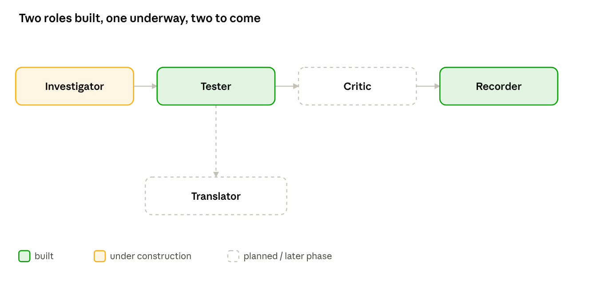

Introduction
When two teams analyze the same signal, they should get the same answer.
FeatureGraph turns scientific and engineering time series into defined, checkable summaries, so every number traces back to the assumptions that produced it.
The problem
The same question gets different answers, and nobody can say why.
Scientific and engineering time-series analysis is not standardized. Researchers repeat ad hoc coding work, and the files and databases they produce diverge into several sources of truth.
Work gets thrown away and redone
People on the same team write slightly different code for the same problem. A notebook saved months ago runs on outdated code, an old version of the data, or broken dependencies.
Derived data diverges
Static files, databases and data services all act as sources of truth. They get handed around and rebuilt with different expectations.
Teams disagree and cannot trace it
Each research group chooses its own computation parameters. When two groups report different answers, there is often no way to find where the difference started.
It stays invisible until it costs days
A report expected to take hours takes days or weeks because the correct numbers have to be hunted down.
What FeatureGraph does
One place where an analysis is defined and answered.
FeatureGraph processes raw time-series data into summaries and records each result with the assumptions that produced it. Research teams run an analysis the same way every time, and query its results from one place where the provenance is defined.
Construction and access sit together, so changing an assumption means rerunning the study from the same place. If the same data needs a different smoothing window, sampling interval or filter, that creates a new defined study. The difference is visible and recorded, not buried in a notebook.
FeatureGraph does not retain raw data in the service. Only the constructed summaries can be queried.
An example
One breath at a time.
FeatureGraph reads a recording and splits it into individual waves. Each wave is called an object and is described by measures such as its height, duration and shape. In a respiration recording, each object is one breath.
The same construction applies to other oscillating signals, such as pressure changes in an industrial reactor or mechanical pulses from a rotating drill string. It depends only on the shape of the signal, not on outside context, so the method is not tied to one field. The accuracy of each measure traces back to the construction parameters, such as the smoothing window size and the detected period of the wave.
BIDMC and CapnoBase are two public respiration datasets. They measure breathing with different signals and sampling frequencies. FeatureGraph works in one-second intervals on both, so the same measures can be computed on each.
How it works
Every result passes through five layers.
The first four layers are built. They are fully deterministic and run outside any language model. The fifth layer is in development for both human queries and agent-driven loops.
Primitive
A built-in compiler operation trusted by construction, such as identifying a rising or falling state, or calculating how much a quantity has exceeded a threshold over time.
Definition
A parameter or configuration chosen by the user or supplied from outside the compiler, such as the window size.
Object
The compiled output of a definition, such as the amplitudes, periods and durations of the individual waves in a sample.
Measure
A value computed from one or more objects, such as average duration or maximum temporal asymmetry.
Scientific interpretation in development
A claim about what the measures mean, written by a person or an agent. This layer sits outside the deterministic compiler.
The compiler is featuregraph-core, installed with pip install featuregraph-core. The current version is built for oscillating signals and can be adapted to other kinds of time series.
Language models
The model writes the question. A program outside the model answers it.
FeatureGraph is building natural-language access to its results. In the demo, an agent built on Cohere's Command A turns a question into a JSON query, and a separate Python program checks the query and runs it. The check confirms that the query is well formed, that the dataset it names exists in the table, and that it can run.
The demo question: Among confident CapnoBase cases, which are outliers in both the number of detected cycles and mean temporal symmetry? An outlier is a value at least 1.5 sample standard deviations from the mean of that measure across the confident cases in that dataset.
{
"op": "intersect",
"of": [
{"op": "outliers", "measure": "cycle_count", "z": 1.5,
"from": {"dataset": "capnobase", "is_confident": true}},
{"op": "outliers", "measure": "mean_symmetry", "z": 1.5,
"from": {"dataset": "capnobase", "is_confident": true}}
]
}The demo runs on a small mock table. Its values are not derived from real data.
The query layer is made of five agent roles. Two are built, one is under construction and two are planned. The Investigator proposes hypotheses as labeled free text, and nothing becomes a finding until it is tested. The Tester writes specs that run through a deterministic executor, checked by validation and held-out data. The Critic judges whether a stated finding follows from what was run. The Recorder writes the provenance record from the run logs. The Translator maps a new domain's vocabulary onto the schema, and is deferred to a later release.

The loop generates hypotheses and translates queries inside the language model, while the analysis runs outside it. That means the whole analysis can be tracked with receipts, rerun outside the loop and checked. It also means the loop can potentially run on a more cost-efficient model than the frontier-size models used for open-ended research. The output is a short analysis stub, usually two to three pages, that a researcher can pick up, verify and build on.
Where it stands
What is built, what is in development, and what it does not claim.
Built
- The compiler layers P, D, O and M, deterministic and outside any language model.
- The
featuregraph-corepackage. - Runs on breathing recordings (BIDMC, CapnoBase), a wearable study from PhysioNet and a Tennessee Eastman reactor signal.
- A public research record.
- Two of the five agent roles, the Tester and the Recorder.
In development
- The scientific interpretation layer and its agent loop.
- Natural-language access beyond the mock-table demo.
- Support for time series that do not oscillate.
Not claimed
- FeatureGraph provides structure and an audit trail. It does not provide clinical validation or final scientific interpretation.
About the author
Nazia Habib is a research engineer and data scientist building FeatureGraph, a framework for generative scientific data analysis using cost-effective language models. Her background is in helping research teams in oil and gas drilling and automation standardize their behavioral monitoring workflows. She specializes in the verification and behavioral compliance of automated systems.